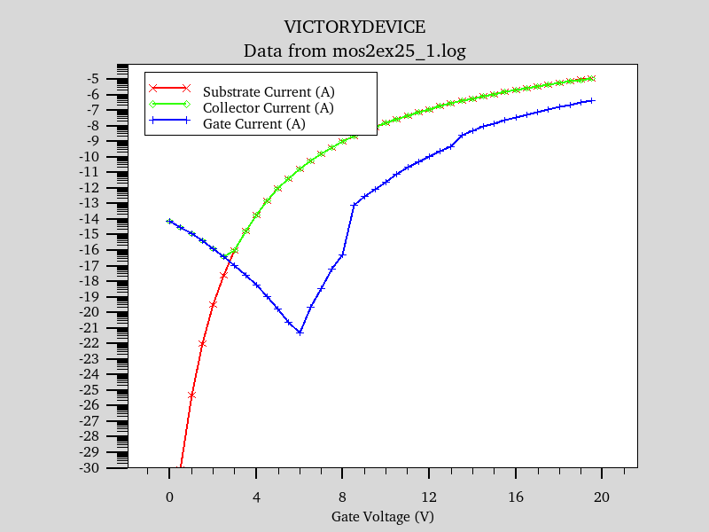
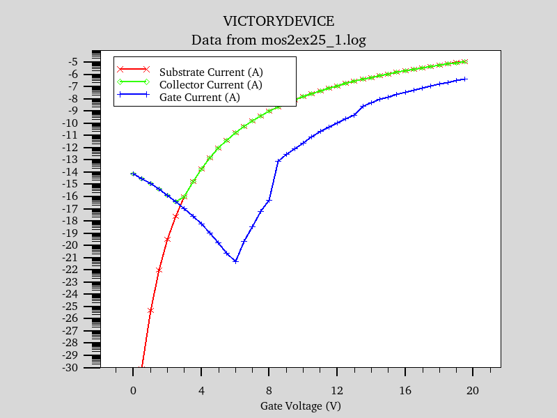
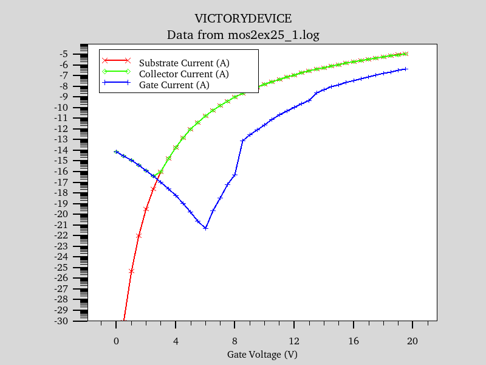

| Requires: | Victory Process 3D Structure Editor, 3D Diffusion and Implantation |
| Minimum Versions: | Victory Process 7.22.0.R Victory Device 1.12.1.R |

Victory Device 3D
It is well known that electric field enhancement occurs at the tip of a pointed structure. Using this phenomenon, it is possible to create such high fields with only moderate voltages, that electrons can tunnel from the tip of the pointed structure directly into the surrounding vacuum. This process is analagous to tunnelling through an interfacial energy barrier into a conduction band, except that the conduction band in this case, is the transmittance of an electron into the surrounding vacuum, where the path of the now free electron can then be influenced by any electric fields that exist in that vacuum region.
The escape of electrons from a solid into the vacuum from a high field region, is exactly analagous to the escape of electrons from a solid heated wire. It is therefore possible to create devices exactly analagous in operation, to vacuum valves, only theses field devices can be created in tiny volumes on silicon chips, rather than be encased in bulky evacuated glass tubes. The addition of a control gate and collector electrode to such a silicon device, therefore allows the creation of silicon based vacuum triodes with useful gain at relatively low operating voltages. An added bonus is a natural tolerance to radiation harsh environments, plus a very low off current, since no current is required to heat the emitter as occurs in a traditional heated emitter vacuum valve device. There is also no reason not to create solid state silicon versions of pentode valve equivilents etc. for RF applications because of the analagous nature of the device operational physics.
In this example, we demonstrate a pointed field emitting device together with collector and current control gate electrodes, forming a vacuum triode. The off state leakage is plotted in mos2ex25_0.log and shows the unintentional field emission of electrons from the gate electrode to the collector, as the collector voltage increases to the operating voltage of 20 volts. However, the maximum off leakage is still very well controlled at 1e-14 Amps.
Once at it's operating voltage, mos2ex25_1.log shows the gate control plot. The collected current of this triode can be changed by a minimum of 9 orders of magnitude, by the gate electrode voltage input, making it a very useful amplifying device. As can be seen from the plot, as the gate voltage is increased, the field between gate and collector reduces, thus reducing this parasitic current path with increasing gate voltage. After approximately 2.8 volts of gate bias, the collected current is mostly emitted from the emitter electrode, rather than the gate electrode.
This example makes use of the Zaidman model, which first calculates the field emission from a semiconductor, into the vacuum, then the emitted electrons follow the vacuum field lines until they encounter a metallic electrode. In this triode design, it is both possible for the gate electrode to receive electrons from the emitter, as well as emit electrons to the collector. So this electrode is made of two parts, one part metal electrode, to receive electrons from the emitter, and one part semiconductor to enable transmission of electrons to the collector. If electrons in the vacuum encounter an insulator before a metallic electrode, the electrons travel along the insulator / vacuum boundary, until they encounter a metallic electrode.
To load and run this example, select the Load button in DeckBuild > Examples. This will copy the input file and any support files to your current working directory. Select the Run button in DeckBuild to execute the example.